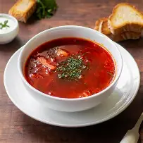
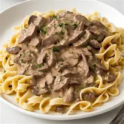
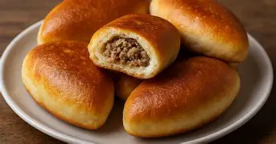

Explore Russian Cuisines
Blini
Thin, delicate pancakes traditionally served during Maslenitsa and enjoyed year-round with sweet or savory toppings.
Taste profile: Light and tender with a mild buttery flavor. They act as a canvas, pairing equally well with honey and jam or rich toppings like smoked salmon and caviar.
RecipePelimi
Traditional Russian dumplings made from flour and water, often served with butter or sour cream.
Taste profile: Mild and slightly chewy with a subtle sweetness. They are often served as a side dish or in soups.
Recipe
Borscht
A hearty beet soup that is a staple of Russian cuisine, often served with sour cream and fresh herbs.
Taste profile: Rich and earthy with a sweet and tangy flavor. The soup is often served hot and is known for its vibrant red color.
RecipeOlivier Salad
A traditional Russian salad made with potatoes, carrots, peas, pickled cucumbers, and mayonnaise.
Taste profile: A balanced mix of sweet and tangy flavors with a creamy texture. It is often served cold and is a popular dish during holidays.
Recipe
Beef Stroganoff
A classic Russian dish made with tender beef, mushrooms, and a creamy sauce served over rice or noodles.
Taste profile: Rich and savory with a creamy texture. The dish is known for its robust flavor and comforting warmth.
Recipe
Pirozhki
Small, round pastries filled with meat, vegetables, or cheese, often served as a snack or appetizer.
Taste profile: Flaky and buttery with a variety of fillings that can range from sweet to savory. They are often served warm and are a popular street food in Russia.
Recipe